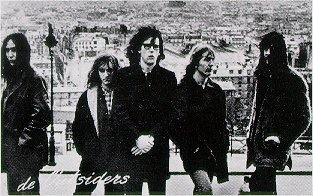

Misfit: a tribute to the Outsiders
VV.AA. - Misfit
(1994 - LP - Screaming Apple) Germany
-
Morlocks: You Mistreat Me
-
Thanes: Sun's Going Down
-
Quatloos: Felt Like I Wanted To Cry
-
Dukes: That's Your Problem
-
Birminghams: What's Wrong With You
-
Ultra 5: Lying All The Time
-
Monomen: Filthy rich
-
Lust-O-Rama: Won't You Listen?
-
What...For!: If You Don't Treat Me Right
-
Beatpack: Misfit
-
Kliek: I Love You No.2
-
Gretsch: You Remind Me
-
Tell Tale Hearts: Daddy Died On Saturday
-
Eastern Green: Do You Feel Alright?